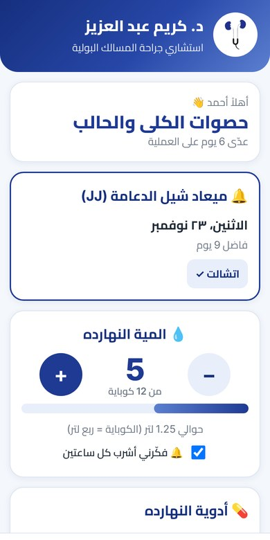
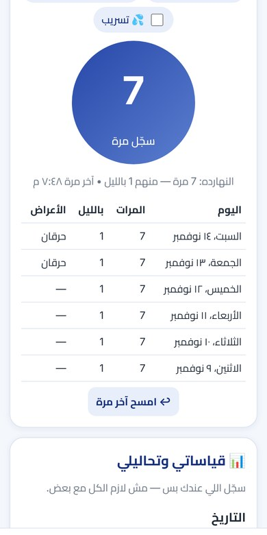
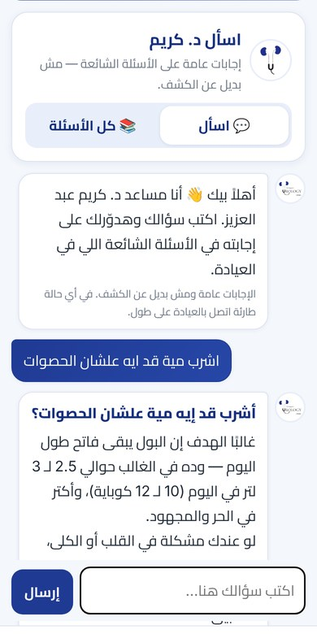

تطبيق باسم حضرتك ولوجو العيادة على موبايل كل مريض — المريض بيتابع علاجه في البيت، ويجيلك الكشف ومعاه تقرير جاهز أندرويد وآيفون • بكود QR واحد • ببلاش للمريض • يوميات التبول والمية والدعامة
▶ فيديو 38 ثانية بيورّي التطبيق وهو شغال



👨⚕️ فايدته لحضرتك
- المريض بيجي الكشف ومعاه تقرير PDF مرتّب: أدويته ونسبة التزامه، وقياساته، ومتابعته اليومية
- مكالمات أقل للعيادة: بوت بيرد على الأسئلة المتكررة بإجابات إنت بتراجعها وتوافق عليها
- صورة احترافية: تطبيق باسمك ولوجو عيادتك، وأكليريك بكود QR على المكتب
- حجز أسهل: زرار اتصال وواتساب برسالة جاهزة فيها اسم المريض والسبب
- إنت المتحكم في المحتوى: تعدّل المواعيد والأسئلة والنصايح من ملف جوجل شيت، والتعديل بيوصل للكل من غير تحديث
🧑 فايدته للمريض
- تنبيه في ميعاد كل جرعة — حتى والتطبيق مقفول
- يصوّر الروشتة والتطبيق يقرا الأدوية ومواعيدها
- عدّاد مية يومي بهدف (مهم لمرضى الحصوات)
- يوميات التبول: المرات، الليل، الحرقان والدم
- تذكير بميعاد شيل الدعامة قبلها بأسبوعين
- تحذير فوري لو سجّل علامة خطر (احتباس، جلطات، سخونية)
❓ أسئلة مهمة
بيانات المرضى بتروح فين؟محفوظة على موبايل المريض بس، ومش بتتبعت لأي سيرفر. التقرير المريض بيبعته بنفسه لو حب.
البوت ممكن يقول كلام غلط؟الإجابات مكتوبة مسبقًا وعليها «مسودة» لحد ما حضرتك تراجعها، والبوت بيختار منها بس. وأي علامة خطر بيوجّه المريض للعيادة أو الطوارئ.
شغال على الآيفون؟أيوه — نفس الكود بيفتح تطبيق للأندرويد، وللآيفون نسخة بتتضاف على الشاشة زي التطبيق.
محتاج من حضرتك إيه؟ولا حاجة تقنية — مراجعة إجابات البوت، وتعديل المواعيد من الشيت لو اتغيّرت.
جرّب التطبيق دلوقتي
افتح صفحة التحميلجرّبه في المتصفح